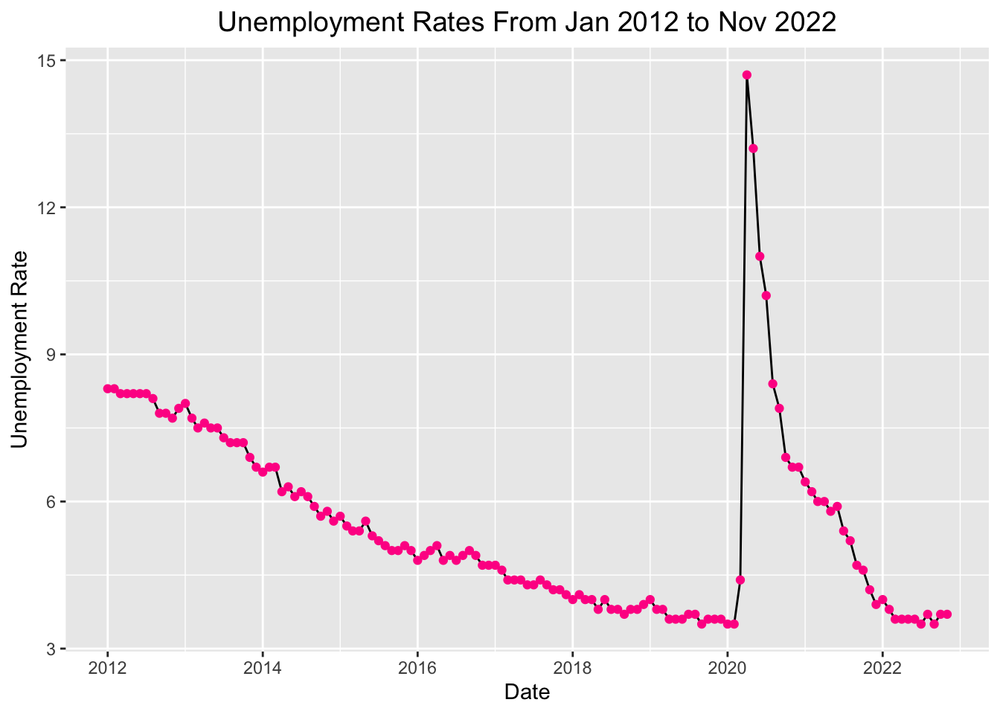
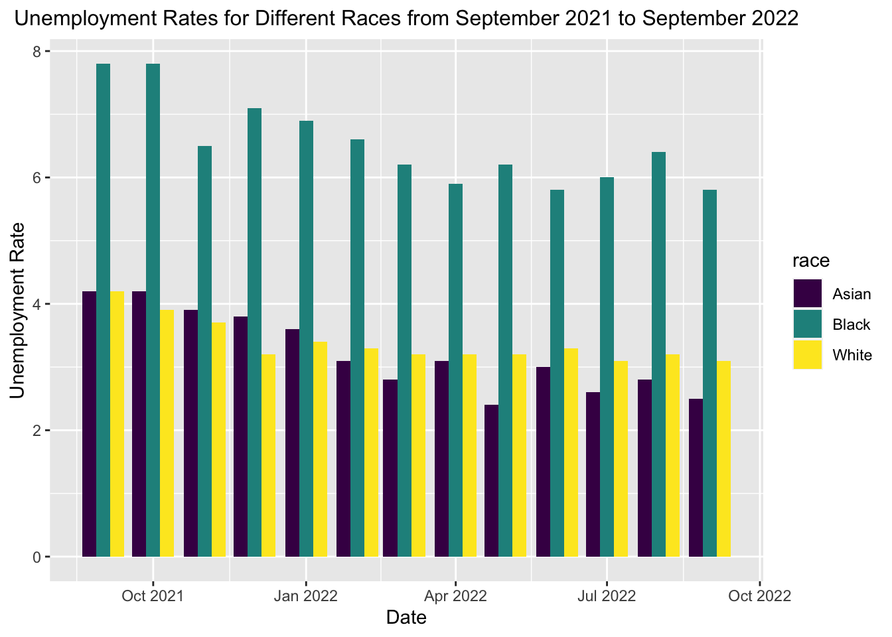
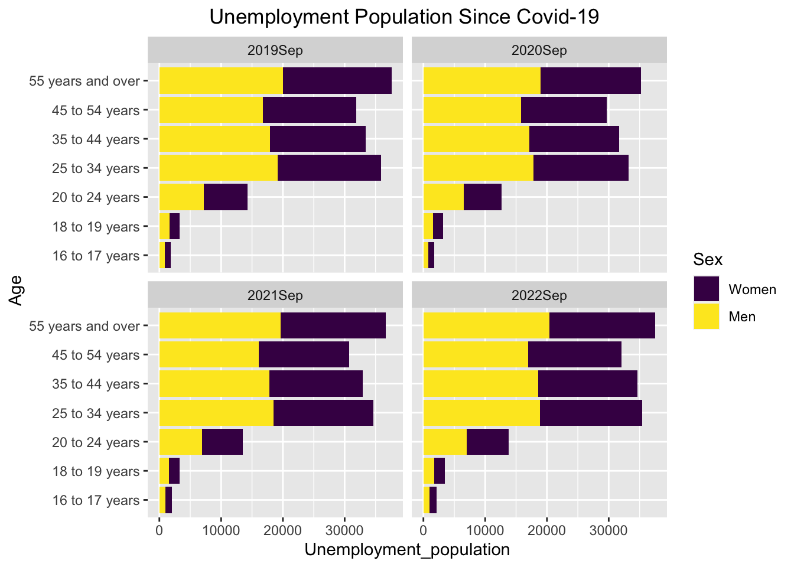
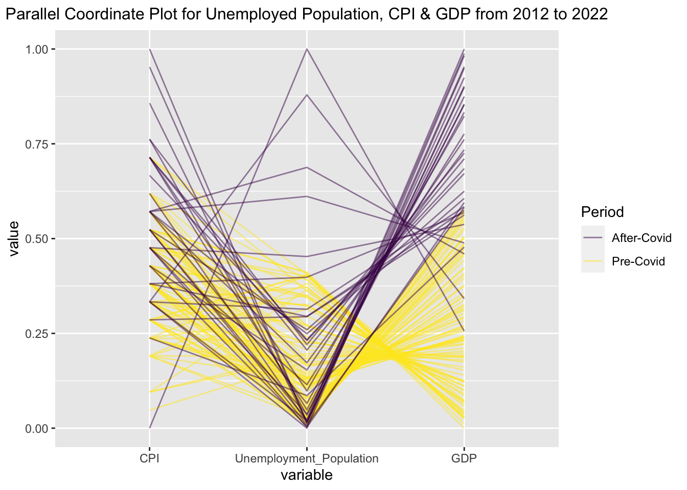

Chapter 4 Results
4.1 Monthly Unemployment Rate
In this section, we will visualize how U.S. unemployment rates changed each month from January 2012 to November 2022. We will visualize this time-series data using a line chart. Moreover, we will explore whether unemployment rates have a cyclical pattern for every month during the past eleven years.
4.1.1 Visualizing Time-series Data: Unemployment Rate

From the plot above, we can see that the unemployment rate has been decreasing since 2012, which is very impressive. However, as you can see from the plot, the unemployment rate suddenly soared at the beginning of 2020, and it reached its highest point in April 2020 (14.7). After April 2020, it has been decreasing gradually. Till 2022, it almost went back to the unemployment level before Covid-19.
4.1.2 Exploring Cyclic Pattern of Unemployment Rate
As you can see from the plots, each month’s unemployment rate trend is very similar. The unemployment rate has been decreasing since 2012 until the beginning of 2020. The unemployment rate suddenly soared, and it reached its highest point in February 2020. After February 2020, it has been decreasing gradually. And we can notice that the unemployment rate in April and May has changed the most dramatically.
4.2 Unemployment Rate by State
In this section, we will visualize the unemployment rates of each state in the U.S. for the last 36 months. We have divided the past 36 months into three periods, listed as Oct 2019 - Sep 2020, Oct 2020 - Sep 2021, and Oct 2021 - Sep 2022. We will explore the distribution of each state’s unemployment rate using a histogram. Also, the average unemployment rate is calculated for each of these three periods for each state, so as to compare each state’s unemployment rate using a Cleveland Dot plot. Moreover, we explore the geographical distribution of unemployment rates using a map.
4.2.1 Unemployment Rate Distribution among Each State
These three histogram graphs present the distribution of average unemployment rates of each state in the U.S. from October 2019 to September 2020, from October 2020 to September 2021, and from October 2021 to September 2022. The x-axis represents the average unemployment rate (%), and the y-axis represents how many states have such an unemployment rate. From October 2019 to September 2020, each state’s unemployment rate ranged from 3% to 12.5%, and most states had more than 5% unemployment rates. There was also a state with an average unemployment rate of over 11%. From October 2020 to September 2021, the average unemployment rate of most states ranged from 3.5% to 7.5%. It is obvious that the median of each state’s unemployment rate shifted left, compared to the previous 12 months, which indicates that the unemployed situation was alleviated to some extent. As for the period of October 2021 to September 2022, the median of each state’s unemployment rate shifted left further. Most states had decreased their unemployment rate below 5%, verifying that job markets recovered after the Covid-19 pandemic.
4.2.2 Visualizing Unemployment Rates of Each State by Cleveland Dot Plot
This Cleveland dot plot exhibits the unemployment rates of each state in the United States during three different periods of recent 36 months. The purple, green, and yellow dots represent the average monthly unemployment rates from October 2019 to September 2020, from October 2020 to September 2021, and from October 2021 to September 2022. The states on the y-axis are ordered by the average monthly unemployment rates between October 2019 and September 2020. Due to the missing data on Puerto Rico, this graph does not include the unemployment rate data of this state. As this graph shows, in the last 36 months, all the states had the highest unemployment rates between October 2019 and September 2020, and approximately ten states reached more than a 7.5% unemployment rate during this period. These extremely high unemployment rates resulted from the burst of the Covid-19 pandemic, which hugely impacted various industries and caused many people to lose their jobs. During this period, Nevada had the highest unemployment rate of over 12.5% among all the states, while South Dakota had the lowest, which is around 4%. However, this difficult unemployed situation was gradually alleviated in the following 24 months. For most U.S. states, the average unemployment rates for the recent 24-12 months and the recent 12 months gradually decreased from October 2020 to September 2022, except for Connecticut. The average unemployment rate in Connecticut between October 2020 and September 2021 was even higher than that between October 2019 and September 2020. Until September 2022, most states had lowered their average unemployment rate for the recent 12 months below 5%.
4.2.3 Geographical Distribution of Unemployment Rates

The above maps show the geographical distribution of average monthly unemployment rates in the U.S. from October 2019 to September 2020, from October 2020 to September 2021, and from October 2021 to September 2022. The shade of color reflects the average unemployment rates during different periods. Deeper blue represents a higher unemployment rate, while lighter blue represents a lower one. We can see the most serious unemployed situations happened from October 2019 to September 2020 from the deeper blue across the U.S. because of the burst of Covid-19. During this period, Nevada had the highest average unemployment rate of over 10% since this state is colored with the deepest blue. In the following 24 months, the unemployment rates in most states gradually dropped as the color on the map gradually becomes lighter. The average unemployment rate from October 2020 to September 2021 in each state was lower than that from October 2019 to October 2020. Also, the average unemployment rate from October 2021 to September 2022 in each state was lower than that from October 2020 to October 2021. These three maps all reveal a pattern that in a specific period, western, southern, and northeastern states suffered more severe unemployed than states in the north and middle, as western, southern, and northeastern states are colored with deeper blue on the map than other states.
4.3 Unemployment Rate by Race
In this section, we will explore how unemployment rates differ among White, Asian, and Black Americans from September 2021 to September 2022. We will visualize these data using a grouped bar chart.

From the grouped bar chart above, we first notice that the general unemployment rate trend from Sept 2021 to Sept 2022 was slightly decreasing. Among the three races we investigated, Black Americans showed the highest unemployment rate during this period, which was twice as much as the unemployment rate of either White Americans or Asian Americans. In addition, we can notice that before January 2022. the unemployment rate of Asian Americans was higher than White Americans, while White Americans displayed a higher unemployment rate than Asian Americans after January 2022.
4.4 Unemployment Situation by Age and Sex
In this section, we will explore how unemployment situations are affected by different ages and sex over various periods. First, we will investigate the unemployed population and unemployment rates in September 2019, 2020, 2021, and 2022 with stacked bar charts, grouped by sex and age. Second, we will visualize the unemployment rates from September 2021 to September 2022 by various ages using Heatmaps. Then, we categorize the unemployed population into three classes, and we will explore the relationships among sex, age, and unemployed population from September 2021 to September 2022 using mosaic plots.
4.4.1 Visualizing Unemployment by Stacked Bar Charts

The above two groups of stacked bar charts show the unemployment population and unemployment rates during the September of each year since 2019. These data are stacked by gender and grouped by age intervals. We can see several trends from these stacked bar charts.
First, as we can see from the stacked bar charts of the unemployment population, the number of unemployed people is small between the age of 16 and 24, compared to that of people over 24. But the unemployment rate is much higher among people between 16 and 24 than people over 24. It is reasonable that the labor force of young people (16 to 24) is relatively smaller because many people at this age are still in school.
Second, we can see from the unemployment rate charts that the ratio between male unemployment and female unemployment has been close to 1:1 since 2019. It implies that unemployment after Covid-19 does not affect each gender more or less. This phenomenon could be explained by the fact that sex discrimination in the labor market has been paid more attention to by more companies, and employment does not give preference to each gender.
Third, we observe that during 2020, the unemployment rate increased dramatically compared to previous years due to Covid-19. Such a situation improved in 2021 when the unemployment rate dropped to a lower level. With the economic recovery, the unemployment rate for employers in most age intervals reached a very low level. However, the unemployment rate for young people aged from 16 to 24 is still high. It is because the economy has just recovered, and many companies need some time to return to the economic level before Covid. Thus, they may not have enough money and efforts to hire and train young employees.
4.4.2 Visualizing Unemployment Rates among Different Ages by Heatmap
The heatmap plots the monthly unemployment rate separated by age. Each box within the heatmap corresponds to an age interval and a month between September 2021 and September 2022, which gives a value for the unemployment rate. We can get two primary observations from this heatmap.
First, it can be seen vertically that the lower part is more yellowish than the higher part. The more yellowish the color is in the heatmap, the higher the corresponding unemployment rate is. Also, the lower part corresponds to a younger age interval. Based on this information, we can conclude that within each month from September 2021 to September 2022, there exists a higher unemployment rate among younger workers than among more experienced workers.
Second, it can be seen horizontally that the colors on the left-hand side are more yellowish on the bottom and more whitish on the top, while the colors on the right-hand side are less yellowish on the bottom and darker on the top. It shows a trend that the unemployment rates among all age intervals have decreased constantly since September 2021. It implies the recovery of the overall labor market after Covid-19.
4.4.3 Visualizing Unemployed Population, Age, and Sex by Mosaic Plot
The mosaic plot shows the unemployment condition by depicting the proportion of low, medium, and high unemployment population groups based on both genders and two age intervals (less than 35 years old / more than 35 years old). The data is a monthly unemployment population data from September 2021 to September 2022. The plot shows several trends.
First, as the proportion of high unemployment population groups is higher among people over 35 years old, workers less than 35 years old might face a less difficult unemployment situation than those over 35 years old. There can be multiple explanations for this phenomenon. For example, the cardinality of working people over 35 years old could be larger than those under 35 years old.
Second, for both age intervals, the proportion of highly unemployed groups is more significant in males than females. It might be explained by various reasons, such as the higher attention paid to gender equality in the workplace.
4.5 Relationships among Unemployed Population, GDP, and CPI
As we all know, unemployment has a strong connection with the development of an economy. GDP and CPI are two essential indicators in economics. GDP serves as a vital indicator to capture a country’s economic output, while CPI reflects price changes and the customers’ purchasing ability. In this section, we will attempt to find what factors will influence the unemployed population. We will explore the relationships between the unemployed population, GDP, and CPI.

This parallel coordinate plot exhibits the relationship between the unemployed population, GDP, and CPI from January 2012 to October 2022. Each line represents a piece of monthly data on the unemployed population, GDP, and CPI. The data before 2020 is considered as the Pre-Covid period and labeled with yellow, and the data after 2020 (inclusive) is considered as the After-Covid period and labeled with purple. All the unemployed population, GDP, and CPI data are standardized. Both before and after Covid-19, CPI negatively corresponded to the unemployed population. In other words, a higher CPI corresponds to a lower unemployed population and vice versa. However, during the past ten years, the several high CPI and unemployed population data were all from the After-Covid period. We can infer that the Covid-19 pandemic resulted in severe inflation and job loss, significantly impacting people’s lives. Moreover, the unemployed population also negatively corresponded to GDP in both Pre-Covid and After-Covid periods. That is, a higher unemployed population corresponds to a lower GDP. In the past ten years, most GDP values after Covid-19 were still higher than before Covid-19, indicating that generally speaking, GDP in the U.S. had grown gradually in the past ten years. However, due to the enormous impact of the Covid-19 pandemic, several pieces of GDP data were lower than some Pre-Covid GDP values and connected with high unemployed population data.